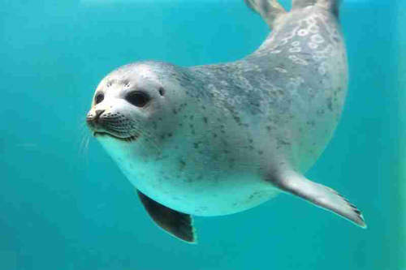
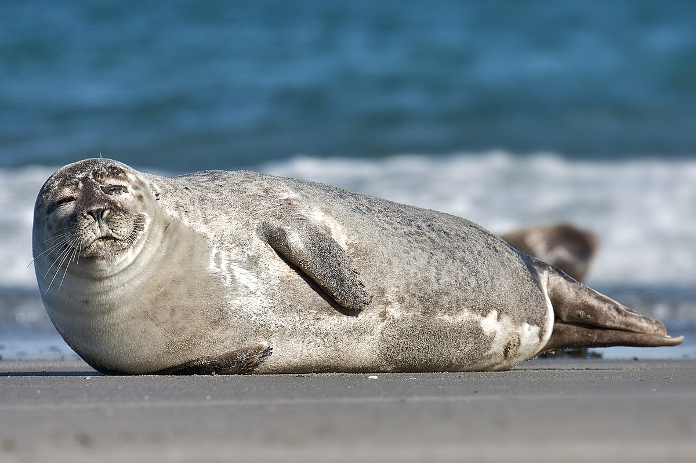
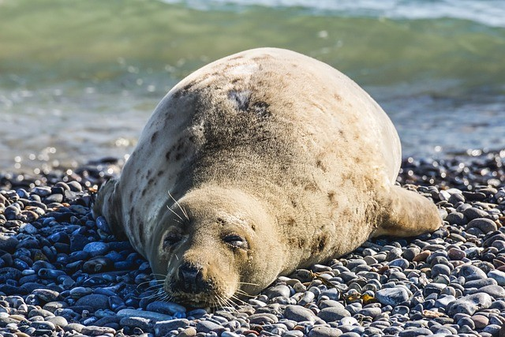

海豹 Seal

北極熊

北極熊

北極熊
Previous
Next
性格：
海豹的性格特質因物種而異，但通常可以描述
為社交、敏感和機警。牠們是社會性的動物，
常形成大規模的群體，互相依賴和合作。海豹
對於彼此的關係和家庭單位非常重視，牠們會
與同伴一起狩獵、休息和繁殖。雖然海豹表現
出友善和和諧的行為，但牠們也具有警覺性高
的本能，能夠快速反應和逃避潛在的威脅。
食物：
海豹主要以魚類和無脊椎動物為食，並根據物
種和地理位置的不同而有所變化。大部分海豹
主要以魚類為食，如鯡魚、鯖魚、鱈魚等，這
些魚類提供了豐富的蛋白質和能量。某些種類
的海豹也會吃蝦、蟹、貽貝等無脊椎動物。海
豹是出色的獵手，擁有敏銳的視覺和聽覺，以
及迅速游泳的能力，能夠追捕和捕食其獵物。
牠們通常在水中捕食，但有些種類也會上岸覓
食或從冰層上捕食。
外表特徵＆外觀：
海豹是一種水棲哺乳動物，擁有獨特的外表特
徵和外觀。牠們具有圓潤的身體，被厚厚的皮
膚和毛髮所覆蓋，這些特徵使得牠們能夠在極
寒的海洋環境中生存。海豹的四肢演變成了鰭
狀結構，使牠們能夠靈活地在水中游動。牠們
的頭部圓而平坦，眼睛和鼻孔位於頭部的頂端
，這樣可以在水中時輕易露出水面呼吸。海豹
的鬍鬚密布在臉部周圍，這些鬍鬚對於感應水
流和探測獵物起著重要的作用。牠們的體色因
物種而異，有的呈灰褐色或黑色，有的則呈白
色或斑點狀。
分佈＆數量：
海豹的分布範圍涵蓋了世界各地的極地和寒冷
海洋地區，包括北極和南極地區以及北大西洋
、北太平洋和南太平洋的部分海域。不同物種
的海豹在特定地區具有較高的集中度，並且其
分布受到氣候和食物供應等因素的影響。海豹
的數量因物種而異，一些物種的數量相對較多
，如普通海豹和斑海豹，而其他一些物種如南
極海豹和象海豹的數量相對較少。此外，一些
海豹物種的數量也受到人類活動的影響，例如
過度捕獵和棲息地破壞等。
生活型態＆習性：
海豹是海洋哺乳動物，其生活型態和習性與水
生環境密切相關。海豹以海洋為主要棲息地，
它們通常生活在冰冷的極地和寒冷的海域，並
具有適應寒冷環境的特殊結構和行為。海豹是
半水生的動物，可以在水中和陸地上生活。它
們的身體構造使其在水中游泳迅速且靈活，通
常以游泳的方式尋找食物和逃避捕食者。海豹
具有良好的潛水能力，可以在水下長時間停留
並深入到水底覓食。海豹是社會性動物，常常
以群體的形式生活。在繁殖季節，海豹會聚集
在特定的繁殖地，進行交配和育幼。雌性海豹
會在陸地上建立巢穴，並在裡面護理幼崽。幼
獸出生後，它們會依賴母親的哺乳餵養和保護
，直到能夠獨立生活。海豹是肉食性動物，其
主要食物來源是海洋中的魚類、魷魚、蝦和其
他海洋無脊椎動物。海豹的食物來源和食性因
物種和棲息地而異，一些物種更偏好特定的獵
物，而其他物種則具有較為廣泛的食性。為了
適應寒冷的環境，海豹具有厚厚的皮膚和脂肪
層，可以提供保暖和浮力。它們還具有敏銳的
聽覺和視覺，以及出色的嗅覺，有助於捕捉獵
物和警覺潛在的危險。
壽命：
海豹的壽命約為20到30年左右。